ADVANCED ALGORITHMS
lecture #1
INTRODUCTION
Stephen Fitz
mathematics, physics
⊕
linguistics, philosophy, psychology
⊕
computer science
Columbia University
(New York, NY, USA)
University of Cambridge
(Cambridge, U.K.)
University of Chicago
(Chicago, IL, USA)
research


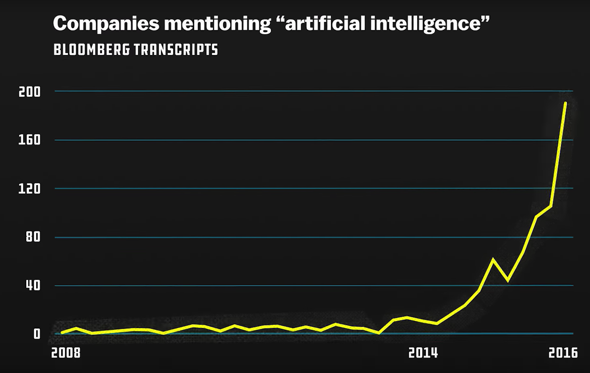
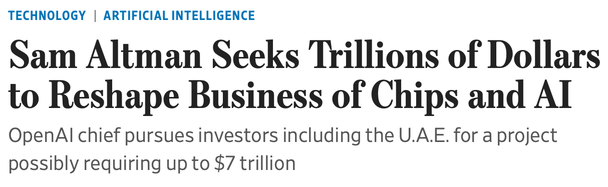
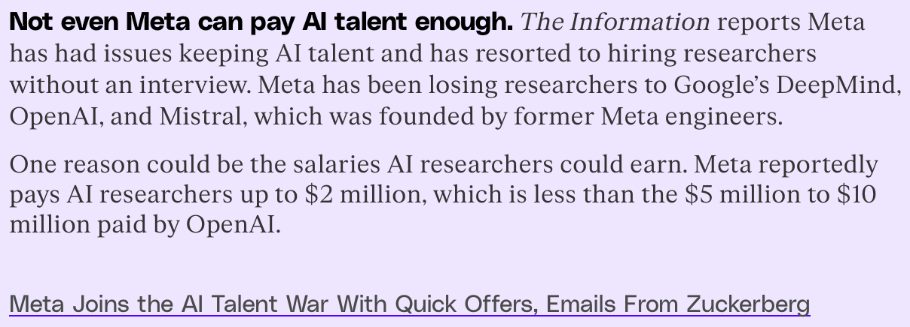
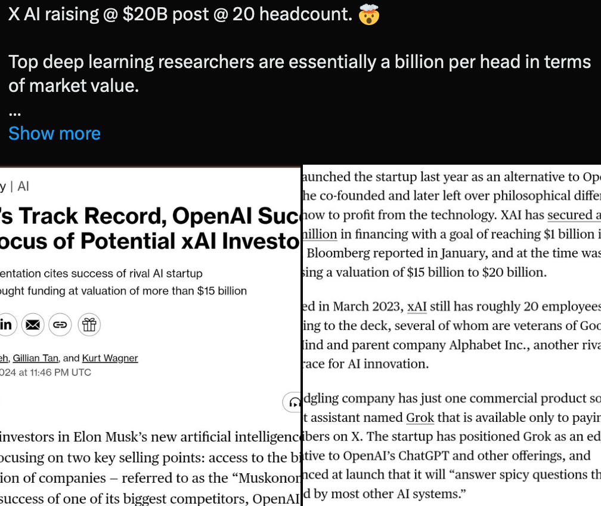
- AGI
- collective intelligence
- neuroevolution
- emergence
- representation engineering
- topological and geometric aspects of embedding manifolds
- AI psychometrics and psychology
- safety and alignment
- machine consciousness
- ...


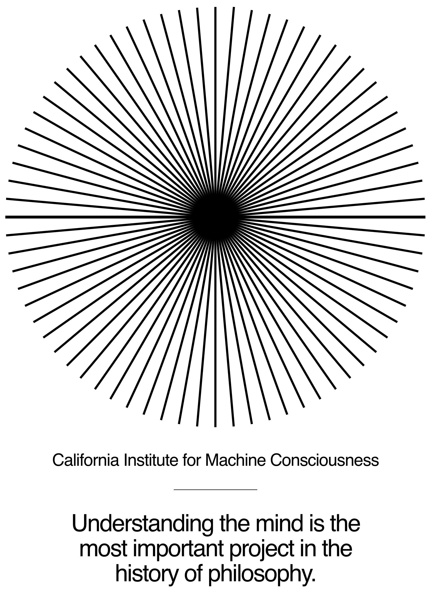
cellular automata
Stanislaw Marcin Ulam

|
John von Neumann
|
John Horton Conway

|
Stephen Wolfram

|


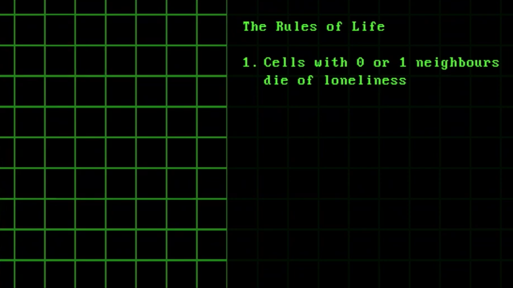
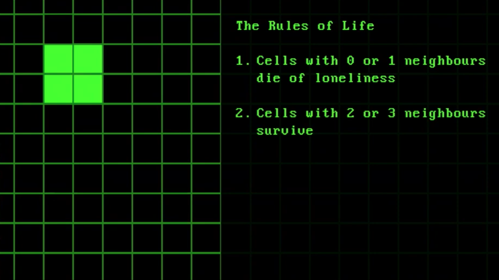
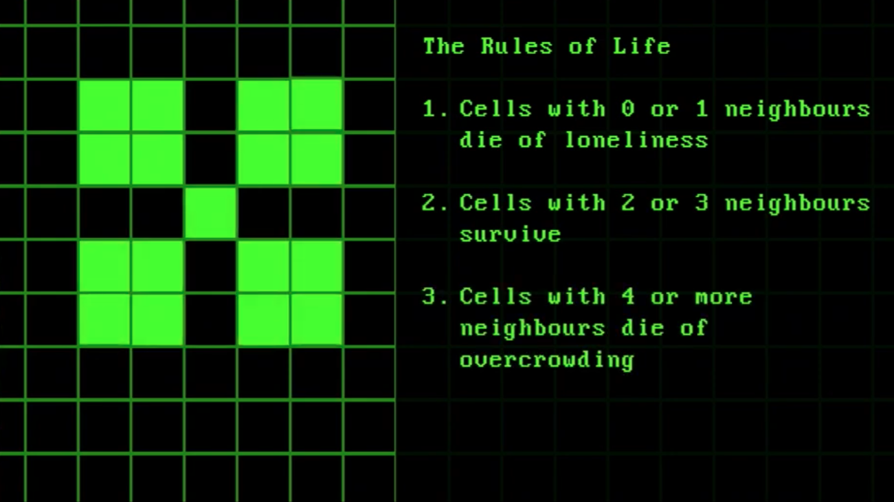

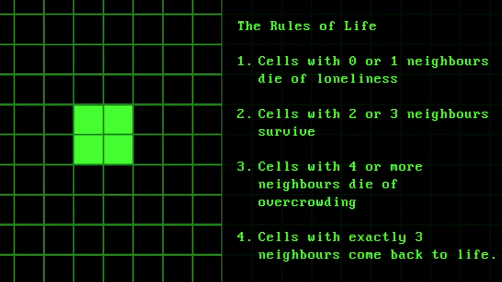

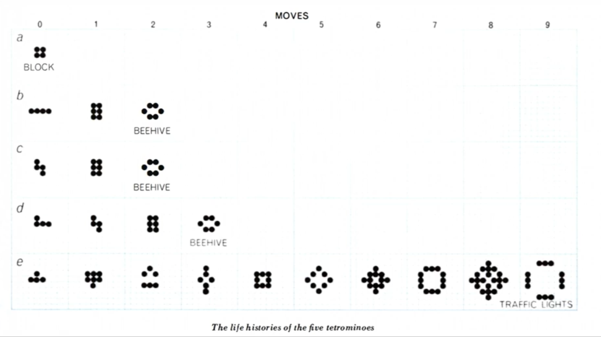
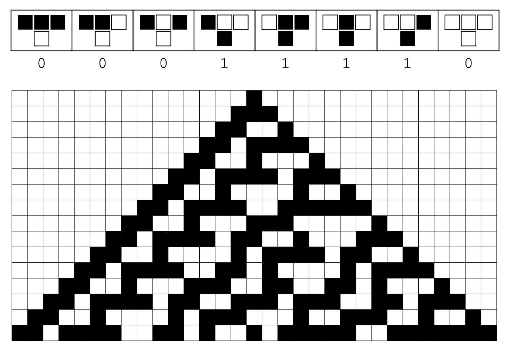
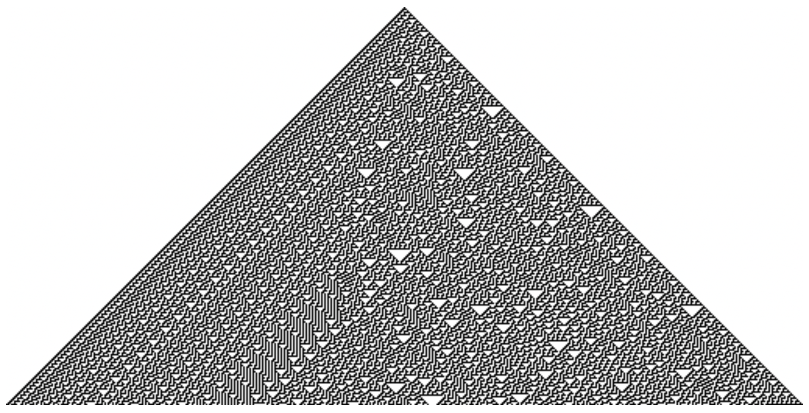
A BRIEF HISTORY OF COMPUTING
Introduction
Many introductory STEM courses lack historical context, which can make it difficult for students to appreciate the significance and purpose of the concepts they are learning. This section provides a brief motivational history of computing, showing the progression of ideas that ultimately led to Python. By tracing the evolution of algorithms and computation from ancient methods to modern programming languages, students gain a deeper sense of why programming exists in the form it does today.
Ancient Times
Algorithms and computation have been a fundamental part of human civilization for millennia. An early example is the Babylonian clay tablet known as Plimpton-322, which contains a list of Pythagorean triples used for computing land areas for taxation purposes.
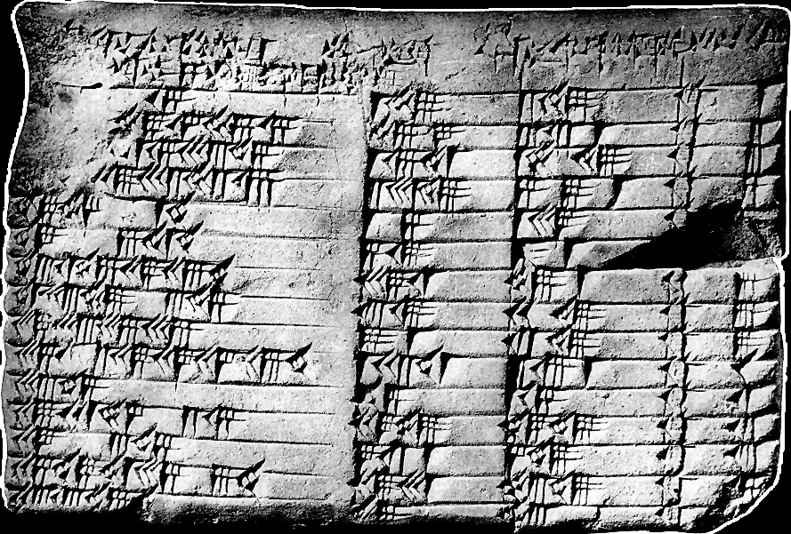
Plimpton-322, a Babylonian clay tablet from 1800 BC
The Euclidean Algorithm
The Euclidean algorithm, named after the Greek mathematician Euclid, is one of the oldest and most well-known algorithms in mathematics. It is used to compute the greatest common divisor (GCD) of two numbers.
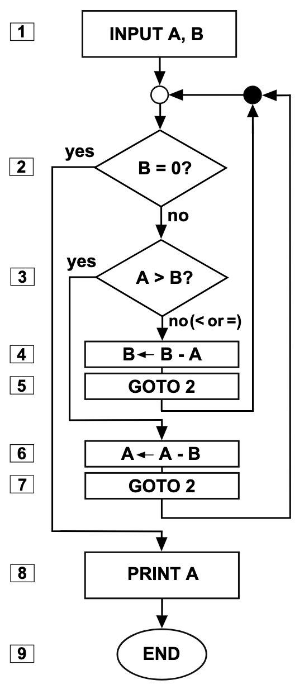
Flowchart of the Euclidean Algorithm
How the Euclidean Algorithm Works
The core idea is to repeatedly perform a simple operation:
- Take two numbers.
- Replace the larger number with the remainder of the larger number divided by the smaller one.
- Repeat this until one number becomes 0. The other number is the GCD.
Computational Complexity Theory
In 1844, Gabriel Lamé analyzed an improved version of the Euclidean algorithm.
His work, which showed the algorithm's efficiency grew logarithmically with the input size, marked the beginning of computational complexity theory.
The Medieval Period
Muhammad ibn Musa al-Khwarizmi, a Persian mathematician, astronomer, and geographer, is often referred to as the father of algebra. His book, "Kitab al-Jabr wa-l-Muqabala," laid the foundations for much of modern mathematics. The term "algorithm" is derived from his name.
Muhammad ibn Musa al-Khwarizmi
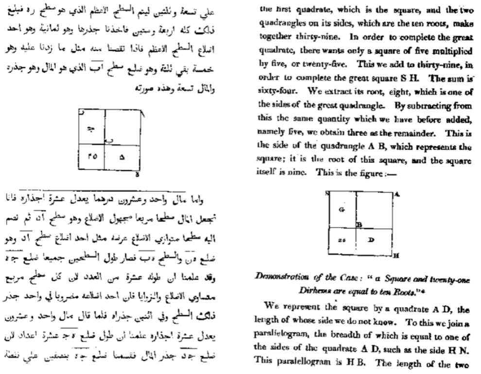
Translation of a sample page from al-Khwarizmi's book on algebra.
The Church-Turing Thesis
The Church-Turing Thesis posits that any computation that can be performed algorithmically can be expressed in a variety of equivalent languages, known as Turing complete languages. One of the most influential models of computation is the Turing machine, introduced by Alan Turing in 1936.
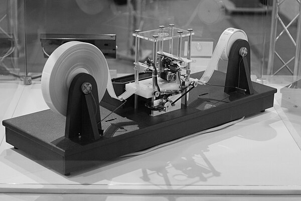
A physical model of the Turing machine. An ideal Turing machine would require infinite tape.
The Halting Problem: A Limit to Computation
Does an algorithm exist that can determine, for any given program and input, whether the program will finish or run forever?
Turing proved this is impossible. The Halting Problem is undecidable, revealing that there are fundamental limits to what computers can solve.
The Jacquard Loom
In 1801, Joseph Marie Charles Jacquard invented the Jacquard Loom, the earliest programmable loom, which used punched cards to control the pattern being woven. This innovation played an important role in the development of early versions of digital card tabulating machines.
Joseph Marie Charles Jacquard
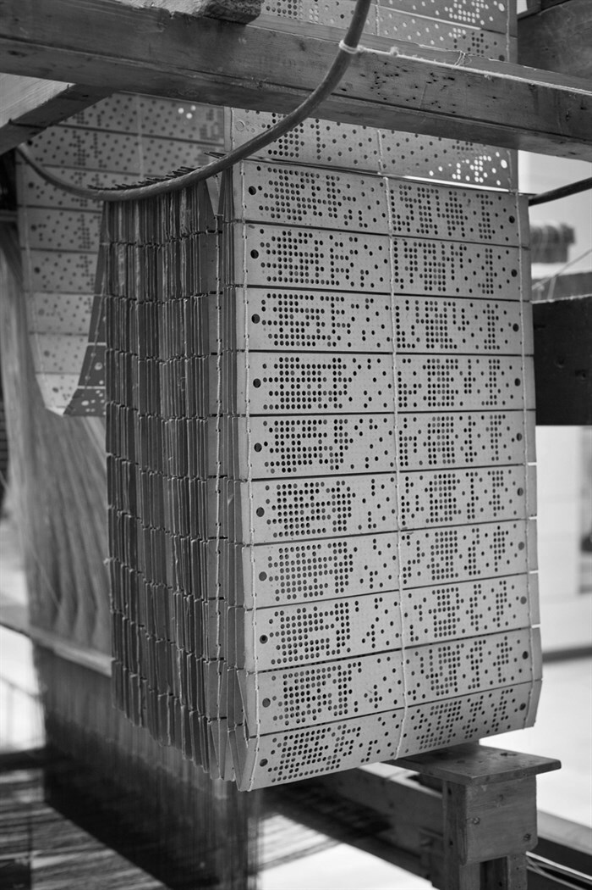
The Jacquard Loom
The Analytical Engine
Charles Babbage and Ada Lovelace envisioned using the punched card concept to create the first mechanical programmable computers. Babbage designed the Analytical Engine, and Lovelace developed the first algorithms intended for such a machine.
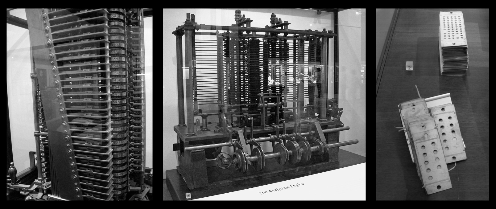
The Analytical Engine
The Hollerith Card Tabulating Machine
In 1890, Herman Hollerith invented the Hollerith Card Tabulating Machine, a pivotal development in the history of data processing and computing. He started the Tabulating Machine Company, which was later renamed IBM.
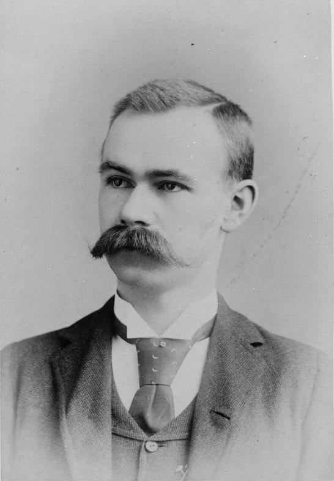
Herman Hollerith
The Hollerith Card Tabulating Machine
A clerk would encode the data as a punch card. Each radio button is on if and only if it has a hole in it.
The form factor of the card was the size of a dollar bill because there were many sorters available for money.
Interestingly, the 80 character limit on modern computers originates from these early punch cards, which had 80 columns of holes.
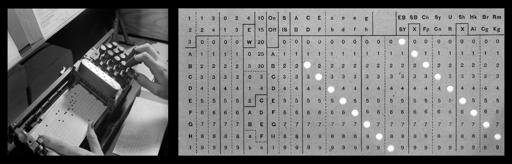
Tabulating machine punch card input
Punch cards served multiple functions in early computing
- Memory
- RAM
- Archive
- Network (packages with cards were physically mailed to another computer)
- User Interface
The Mainframe
The advent of the mainframe marked a significant milestone in the history of computing. Mainframes were capable of storing both data and programs together electronically, a departure from previous mechanical and electromechanical systems.
|
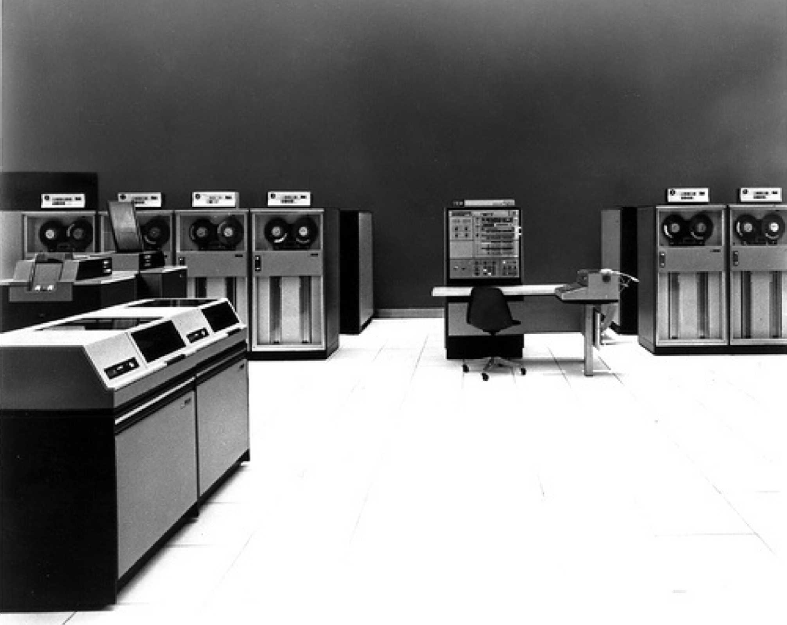 Components of a mainframe. |
front left: disk drives
behind disk drives: punch card writer and reader
in the back: RAM (approximately 8kb)
middle: console (operator sits there)
|
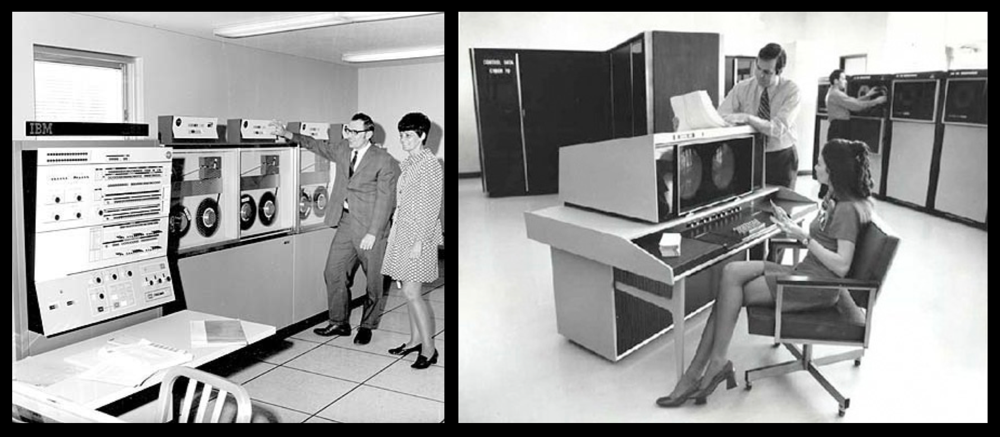
Mainframe operators at work.
Mainframes used machine language, where each instruction a computer could execute was represented by a unique number. This low-level programming was cumbersome, leading to the development of assembly language, a more human-readable representation of machine instructions.
BEGIN LDA INTERX
SUB COUNT4
SKZ
JMP ABORT27
JSR CALCKHJ
ABORT27 NOP
|
load the value stored at the address pointed to by variable INTERX
subtract the value pointed to by COUNT4
skip if the result was 0
else, jump to ABORT27
if we skipped we are now at the next line, which says to "jump to a subroutine" called CALCKHJ
NOP = no operation (don't change the state of anything)
|
One of the most useful innovations in assembly language was the JSR (Jump to Subroutine) instruction, marking the beginnings of procedural programming.
JSR would store the address of the calling procedure and return to it after the subroutine executed. This led to the discovery of the stack, which could keep track of multiple addresses, further advancing programming techniques.
Bugs
The term "bugs" in computing has an interesting history. In 1889, Thomas Edison discovered literal bugs in his phonograph. During World War II, Grace Hopper discovered a moth inside a calculator used for ballistic computations. This incident popularized the term "bug" to describe technical problems.
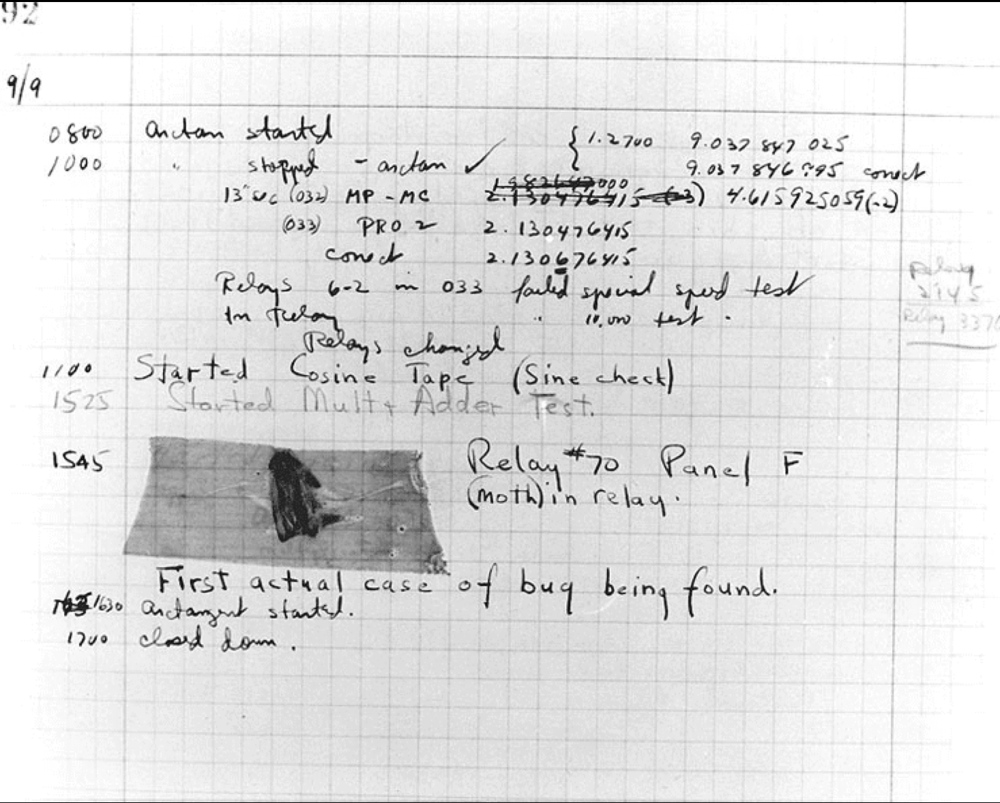
The first documented computer bug was a moth.
Time Sharing
Time sharing was a significant development in the history of computing, allowing multiple users to interact with a computer at the same time. A teletype machine enabled users to work offline under the illusion of using a computer live.
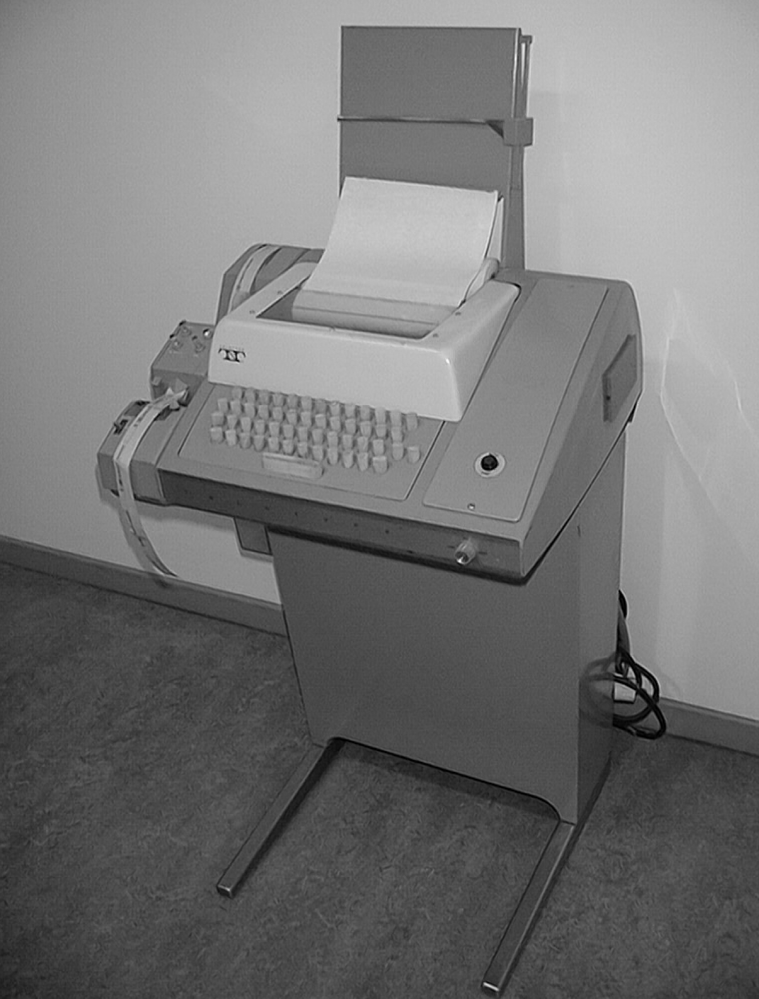
A teletype machine
CRT Terminal
The introduction of the CRT (Cathode Ray Tube) terminal was another significant advancement in computing. CRT terminals allowed users to interact with computers more efficiently. Every operating system still has a terminal console, a legacy of the CRT era.
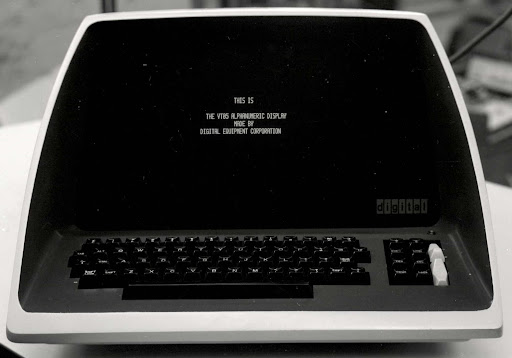
A CRT terminal
Every operating system still has a terminal console, a legacy of the CRT era. Users could edit code on screen instead of physical media, which was a major improvement over previous methods.
This capability required a new kind of software known as text editors.
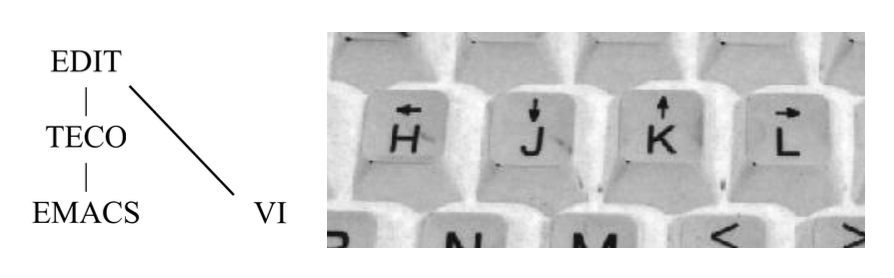
Early text editors.
VI style navigation is popular until this day. The HJKL keys are located on the main row of the keyboard, which minimizes hand movement. VI was originally the "visual mode" of the EDIT program, but it became so popular that it evolved into a standalone editor and has been in continual use by programmers for decades.
The End of Mainframes
The era of mainframes eventually came to an end with the advent of smaller and more affordable computing options. These changes came in three major waves of hardware advances: Minicomputer, Microcomputer, and Personal Computer (PC).
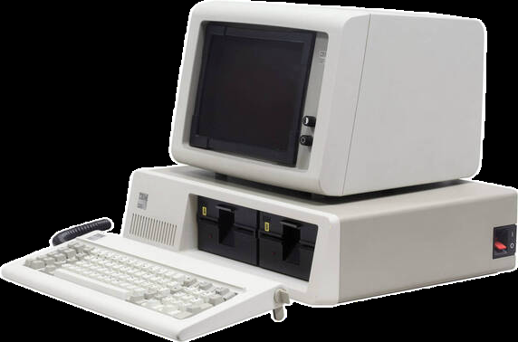
The IBM Personal Computer
Moore's Law
In 1965, Moore made the following observation:
"The complexity for minimum components costs has increased at a rate of roughly a factor of two per year ... there is no reason to believe that it will not remain nearly constant for at least 10 years."
Gordon E. Moore
This exponential growth in computing power per dollar has driven the tech industry for decades.
While the original trend is slowing, progress continues through other means like algorithmic improvements and new hardware designs.
Many believe a future paradigm shift, like quantum computing, will be needed to continue this pace.
Programming Languages
The development of programming languages marked significant milestones in the history of computing, transitioning from low-level to high-level programming.
Early Languages
- FORTRAN: The beginnings of higher-level programming, a step up from assembly, intended for scientific applications.
- COBOL: Supposed to be human-readable, following similar principles as Python, intended for business applications.
- BASIC: Simplified version of FORTRAN, designed for ease of use.
- ALGOL 60: Introduced structured programming and code blocks (Python uses white-space to represent these notions).
- PL/I, CPL, ALGOL 68: Several languages emerged that tried to be the ultimate general-purpose coding language.
Language Evolution
- CPL → BCPL: Simplified version of the Combined Programming Language.
- ALGOL → PASCAL: Initially designed as a pedagogical language to teach structured programming.
- FORTRAN + BCPL → B: A simplified language that combined elements of FORTRAN and BCPL.
- B + PASCAL → C: Combining the simplicity of B with the structured programming of PASCAL.
Object-Oriented Programming
- ALGOL → SIMULA → SMALLTALK: The advent of Object Oriented Programming (OOP).
- SMALLTALK → SELF: Introduced prototype-oriented programming and inspired the actor model, influencing much of modern software development.
Functional Programming
- LISP → SCHEME: LISP, developed for AI, combined with the Actor Model, led to the creation of SCHEME.
- SCHEME introduced functions as objects, tail recursion, and lexical closure.
Python
Python combines concepts from procedural, object-oriented, and functional programming into one versatile language.
It is a powerful, dynamic, interpreted (bytecode compiled) language known for its simplicity and readability. Its syntax eliminates the need for declarations, type annotations, curly braces, semicolons, and explicit memory management, all with the goal of improving code clarity.
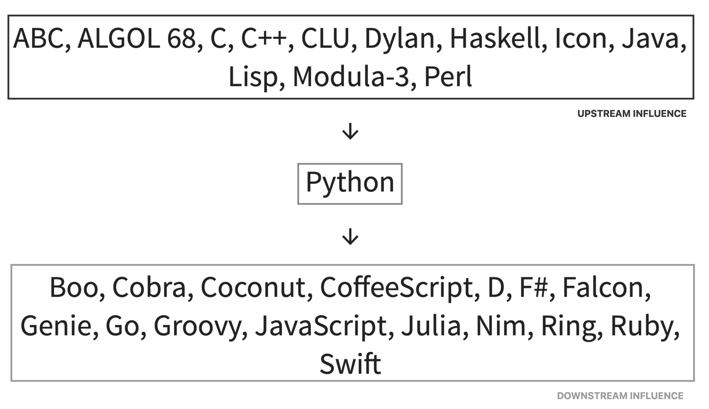
Relationship of Python to selected programming languages.
Conclusion
Understanding the history of a subject provides context and helps us appreciate the significance of what we're learning. This section offers a brief history of computing to show the evolution of algorithms and computation, providing a richer perspective on the technology we use today.
The rest of this course will focus on modern algorithms and data structures, demonstrating how computational thinking can be used effectively to solve various problems.